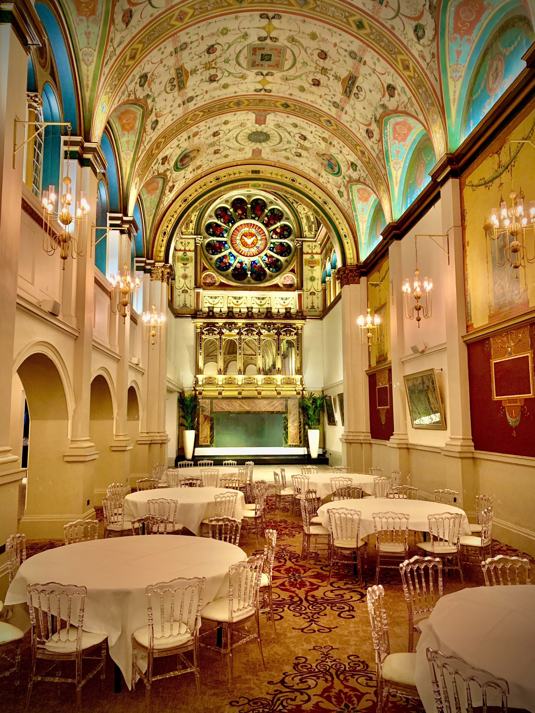

Nikola Urosevic - 500839540
June 22, 2021
Since I recently finished a web development course, I decided to code the webpage
myself. I used html, javascript and css to make this webpage.
The webpage that I created has two parts, the first is a review site (similar to TripAdvisor) where
people could leave reviews for places they have been or services they received. Jack Torrance and
Dr. Mortimer left reviews. The second part of my webpage is a log of the thoughts of R2-D2. For each
character I tried to showcase a relationship as the story went on.
The Shining:
The main relationship that I wanted to show was Jack Torrance and The Overlook Hotel. I used the
hotel reviews as a timeline of his descent into madness. As the hotel slowly takes him over, the
reviews showcase this relationship with The Overlook. The review ratings increase as time goes on
signifying the hotel having more off an effect on him. As the reviews go on, you get an inside look
into how the hotel is manipulating Jack.
Another small detail I added was the sign off that Jack uses. Every post is signed “Jack Torrance at
The Overlook”, but the final post is signed “Jack Torrance & The Overlook”. Which was done to
signify Jack being taken over by the powers of the hotel.
Hound of Baskerville:
The main relationship that I wanted to display was Dr. James Mortimers faith in Sherlocks abilities
as the case went on. Sherlocks unorthodox nature of deduction tests Mortimers belief in him.
I wanted to show Sherlocks unique style of solving cases from a different perspective. All Sherlock
stories are told from either Sherlocks or Watsons perspective. I wanted to show how his action might
be perceived from someone who recruited him to solve a case. In this perspective Mortimer does not
get the luxury of knowing what Sherlock is trying to do, he only sees Sherlocks actions at face
value, with no understanding of intentions. My array of reviews on Sherlocks Detective Service
fluctuates because Mortimer is unsure of what Sherlock is doing and if he is doing a good job. He
ultimately gives him a 5/5 but there are point when it drops to a 3/5.
Star Wars: A New Hope:
I wanted to show Luke’s relationship with his confidence through the lens of R2-D2. I chose R2-D2
because it provides a ‘fly on the wall’ perspective. Luke starts the movie as a kid from Tatooine
but ends the movie as a new jedi warrior. R2-D2s observations capture this transformation. R2-D2
also sees how selfless Luke is and how he does not have any ulterior motives to his actions, other
than his own morals.
Conan Doyle, Arthur, and Pam Smy. "The hound of the Baskervilles." (2006).
King, Stephen. The shining. Hachette UK, 2007.
Wars, Star. "A new hope." Dir. George Lucas. USA: 20th Century Fox Home Entertainment (1977).
Nikola Urosevic - 500839540
June 22, 2021
I have just been hired here at the Overlook Hotel as a caretaker for the winter
season. This Ullman prick who was interviewing me thought he was so much better than me, simply
because I am a recovering alcoholic. I have been clean for months now and I have it under
control. He even tried to scare me into not taking the job, by telling me about the man who had
this job last. That poor sucker went crazy and killed his family. This bastard Ullman thinks
that I am so mentally weak, that I will go stir crazy doing such an easy job. This is going to
be a breeze; I can write my play and I can get a second chance with my family. The hotel is
nice, but Ullman is insufferable, can’t wait to get 6 months away from him and get paid for it.
- Jack Torrance at The Overlook
I have been here in the Overlook Hotel for a few weeks now. I have doing all my
custodial tasks, but it has still left me with lots of time for other things. I have spent my
free time writing my play. I have also spent a little bit of time exploring some of the guest
amenities that the hotel has to offer. I came across a grand ballroom, with a bar. The bar was
emptied out before the Overlook closed, which is probably a good thing because I am recovering.
One of the reasons that we are here, is because when I drink, I tend to have some issues with my
anger. Still, the ballroom looked magnificent. I can only imagine the parties that can be thrown
here. How nice it would be to attend an event like that.
I did a little bit of exploring in the basement of the hotel and I found an old scrapbook. The
Overlook has a fascinating history making the hotel feels like it always has life in it, even
when it is just us.

- Jack Torrance at The Overlook
I have spent the last couple months here at the Overlook. I met the hotel bar
tender today, Grady. He is a great listener and I talked to him about all my problems. My damn
family has been getting on my nerves, “this inhuman place makes human monsters” (King, 208).
I calmed down quickly once Grady poured me a drink. I sat there and drank while I talked to him
for a while. Once I calmed down, I left with a buzz and went to find my family. This hotel is
really growing on me, there’s lots to do. It’s only a shame that my family doesn’t see it too.
- Jack Torrance at The Overlook
It is now December here in Colorado and I have been at the Overlook for Gods
know how long. The weather is getting meaner, and my family is growing insufferable as well. I
went to see bartender Grady to try and relax. To my surprise when I went into the ballroom there
was a fantastic party happening. I sat and drank with Grady and watched the hoards of people
dancing and having the time of their lives. For a moment I was taken away from the stresses of
life and I simply enjoyed watching with Grady.
- Jack Torrance at The Overlook
I originally came here with my family, but now we wish they would leave. This
is our place, and they are intruding. They only came for the winter, but we have been here for
60 years.
-Jack Torrance & The Overlook
The Overlook hotel is closed indefinitely.
- Ullman
Nikola Urosevic - 500839540
June 22, 2021
After the death of my dear friend Sir Charles Baskerville. Enough is enough!
The curse of the Baskervilles needs to be stopped. There can be no more denial of the curse, it
is real! For that reason, I did my research and found the best man for the job. With Sir Henry
Baskerville, the heir to the Baskervilles fortune, coming into London today, I needed to find
answers quickly.
Sherlock Holmes and his partner Dr. John Watson are the men for the job. Upon presenting them
with the manuscript outlining the curse of the Baskervilles, Sherlock dismissively declined, but
through some persuasion I was able to convince him to accept. His deductive abilities shine
through his narcissistic demeanor
- Dr. James Mortimer
Sherlock Holmes is a peculiar man with intriguing tendencies. I have just
concluded a meeting with him and the heir to the Baskerville fortune and Sherlock seemed to have
a hyper-focused tunnel vision on obscure details that Henry would mention. For example, Henry
being a bit tired from his trip across the Atlantic simply “mislaid” (Doyle) one of his boots,
but Sherlock took a deep fascination with that detail. He also took a look at a threating letter
that was left for Henry and while we thought it was a practical joke, Sherlock seemed to
disagree. He quickly and intelligently deciphered the origin of the newspaper used to make the
letter. He even went as far as to suggest we do not travel to Devonshire, citing it to be too
dangerous. “There is no devil in hell and there is no man upon earth who can prevent me from
going to the home of my own people” (Doyle) Henry told him. Although clearly intelligent, I am
starting to rethink who I hired for this case.
- Dr. James Mortimer
Sherlock Holmes is starting to earn his paycheck and his deductive abilities
are finally starting to shine through his quirky habits. His partner Dr. Watson revealed to
me that there was a man following Henry and myself as we left our meeting with Sherlock. He
could not tell me more, as the man fled the scene after being spotted by Sherlock. As I
previously stated, Henry and I headed out to Devonshire, and I was hoping that Sherlock would
accompany us to investigate up close. Unfortunately, he was too busy with his affairs in London
to make the trip out, but he has sent Dr. Watson as his eyes on the ground. I was a little
apprehensive of Dr. Watson, but they both assured me that he would be reporting back to
Sherlock. I must admit that I lost faith in the past few days, but I must trust that his ways
have a reason.
-Dr. James Mortimer
I have been observing Watson work these last few days here in Devonshire. He
watches everything like a hawk and scribbles down every detail. Presumably, he will be sending
these reports back to London, so Sherlock can have a look, but I am not sure if that will be in
time.
There has been an uneasy presence felt here in Devonshire, even some reports of a lonely figure
in the dark watching over the moors. I sure hope that Sherlock and Watson can solve this case
quickly.
-Dr. James Mortimer
In a shocking turn of events, the lonely figure is actually detective Holmes. He tricked us all so as to not tip off the murderer. He has said that he has solved the case and all that is left is to catch the culprit. They put together a plan that seems way too risky. I do not want to risk the life of Sir Henry Baskerville. We have got this far, and I fear that I must simply trust Sherlock and let him use Henry as bait to catch the convict.
-Dr. James Mortimer
Sherlock Holmes solved the unsolvable and freed Devonshire of the Curse of the Baskervilles! His
brilliant detective work has allowed us to once again be without fear here in Devonshire. He
tricked us all and proved once again why the legend of Sherlock Holmes is not one to doubt. For
those travellers wary of visiting our great town, none of our residents are evil and greedy as
Mr. Stapleton was.
-Dr. James Mortimer
Nikola Urosevic - 500839540
June 22, 2021
[Entry 1] Princess Leia downloaded secret Imperial plans onto my R2-Hardrive. I
was given strict instructions to show no one other than Obi-Wan Kenobi. C-3PO and I were sent
off the rebel ship in an escape pod and we landed on an unknown dessert planet.
[Entry 2] compass calibrating…compass calibrating…compass calibrating…location determined:
Tatooine
[Entry 3] C-3PO and I have been captured by inhabitants of Tatooine, creatures of species Jawa.
They are junk scavengers and are going to sell us to farmers on this planet.
[Entry 4] We have been sold off to a man named Owen Lars and his nephew Luke Skywalker. While
Luke was cleaning off my body panels, he accidentally triggered Leia’s message to Obi-Wan, which
I quickly turned off. Luke was infatuated by Princess Leia and wanted to know more.
[Entry 5] I must find and deliver the message to Obi-Wan. I will leave at my first chance.
- R2-D2 Signing off Star-Log 1
[Entry 1] According to my research Princess Leia is being held captive aboard an enemy station.
We must act fast to save her.
[Entry 2] From my primary calculations we require 3 able bodies to save the Princess. Luke is
willing to risk it all to save her majesty. Han Solo does not share this same mindset. Han is
far more worried about his own safety then the Princesses. He stated that it is a suicide
mission. According to my calculations, it is possible but the room for error is minimal.
[Entry 3] Luke manages to convince Han to help with the promise of money as a reward for saving
the Princess. Han Solo seems to be more motivated by money than the need to help others. Luke
needed no monetary reward to save Leia, he wanted to do it simply out of empathy.
[Entry 4] If our plan is to work, I will override the controls of the ship while Luke and Han
pose as Storm Troopers arresting Chewbacca. Once inside they will locate the Princess as I
protect them using mainframe controls.
-R2-D2 Signing off Star-Log 2
[Entry 1] It is determined that there is a lone weakness to the Death Star. There is one exhaust
port that lacks any protective materials. Precisely striking this weak link with a proton
torpedo could break through and detonate the main reactor.
[Entry 2] The exhaust port is located at the end of a slim corridor, which will require extreme
and precise piloting ability to reach. Luke selflessly volunteered, once again showing his
willingness to help others. His confidence in his own piloting ability came through.
[Entry 3] Han refused to help with this mission, as he just secured his payment for delivering
the plans to the Rebellion and saving Leia. He saw no monetary gain available and said the money
he just made would be useless if he is dead.
[Entry 4] I was loaded into Luke’s plane, and we set out for battle. There was an eery
confidence emanating from Luke, something that was not present before.
- R2-D2 Signing off Star-Log 3
[Entry 1] Luke went into battle knowing it was a suicide mission.
[Entry 2] Gold squadron got wiped out.
[Entry 3] Red four is under attack from a TIE fighter. Luke fought him off.
[Entry 4] We are flying towards the target.
[Entry 5] Imperial fighter has been detected.
[Entry 6] Damage detected on Red Five…running diagnostics…diagnostics complete.
[Entry 7] Han appears out of nowhere to fight off the Imperial Fighter.
[Entry 8] Luke has only 1 chance to get this right.
[Entry 9] Luke turned off his computers.
[Entry 10] He was calm.
[Entry 11] He was trusting the force.
[Entry 12] He took his shot…
- R2-D2 Signing off Star-Log 4
[Entry 1] Luke did it. He channeled the force to capitalize on his one shot. He saved the
Rebellion and hundreds of planets that would have fallen victim to the Death Star.
[Entry 2] He resonated a new energy, the force. It was evident that he had found his passion. It
was evident to all that this was not the same little boy from Tatooine, but now he was a jedi
warrior.
[Entry 3] Han Solo had also received a resounding applause for his efforts in the battle. He too
seemed to have been changed from battle.
- R2-D2 Signing off Star-Log 5